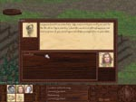
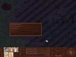

| Max 3 Skill Points and Gift of Goddess Spell "Root" |
Background/Summary
Kieno, a local farmer, is having problems planting his fields. Every time he plants his seeds are dug up. He is too stubborn to ask for help, and he lives on the far side of the river so no one knows he's having planting problems.
Player's Introduction
Speak with Kaulo.
Objectives
Find out what's wrong Kieno's Farm and fix it.
Completing Objectives
1) Speak with Kaulo and she will tell the party that her and her husband Kieno are having problems with their field. *WARNING* If there is a party member with 8 charisma or less they will yawn and the quest will ends here.
| 2) Speak with Kieno and offer to help. |
 |
3) Wait in the fields between the hours of 23 and 2.
|
3.1) If no party member has stealth the quest ends here. |
| 3.2) If the party has stealth they will spot baby hoppers eating the seeds Kieno has sown. If there is no one in the party with at least 17 dexterity they will have to kill the hoppers +1SP |
 |
|
3.3) Trap the hoppers: |
|
3.3.1) If a party member has stealth they will spot baby hoppers eating the seeds Kieno has sown. If a party member has dexterity of at least 17 they will be able to trap the baby hoppers. |
| 3.3.2) Return to Kieno during the day Kieno and he will ask if the party can spare 2 days to help him re-plant. If the party agrees the Goddess will bless them with "Root" +3SP |

|